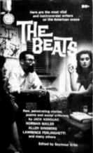

Books About The Beats
This is a growing list. You might think it would be easy to
put a complete bibliography of books about the Beats. But ...
there are a LOT of books about these guys. I mean A LOT.
I'm not listing publication information or card numbers (this
isn't the fucking Library of Congress). I'll just tell you about the
books I've read and what I think of them.
Books on the Beat Generation:
The Beat Generation by Bruce Cook
Supposedly the first book on this subject. Very good chapter on
Allen Ginsberg and the
significance of
'Kaddish,'
and a very enlightening piece on
William S. Burroughs
('The Burroughs who writes the books is like the God who is always
absent from the Hieronymous Bosch paintings, stern-faced yet secretly
snickering (having made his judgement) at the sufferings of mankind.')
(Scribner, 1971)
The Portable Beat Reader Edited by Ann Charters
I got a lot of my biographical info on writers like
Rexroth and McClure from the intros here. The selection of writers is
good, and the choice of writings is excellent.
(Penguin, 1992)
Kerouac and the Beats: A Primary Sourcebook
Edited by Arthur and Kit Knight
Arthur and Kit knight compiled this collection from their Beat journal
the unspeakable visions of the individual. The book includes
interviews with
Philip Whalen and
John Clellon Holmes,
memoirs by
Carolyn Cassady,
Edie Parker
(Kerouac's first wife) and
Herbert Huncke,
and letters from Kerouac.
(Paragon House, 1988)
Then there are numerous books no longer in print, like 'The Holy
Barbarians' by Lawrence Lipton and the Seymour Krim collection
pictured at the top of this page. I haven't seen these books, so
I'm not covering them here.
Books on Jack Kerouac:
Kerouac by Ann Charters
This is, to me, the best book on Kerouac or the Beats in general.
Ann Charters writes well, and the final section, in which she visits
the fat, alcoholic Kerouac in his home in 1966, is positively
chilling. The author is the wife of Samuel Charters, who wrote
some classic books about old blues singers. The one aspect of this
book that's a bit, well, dated is the interpretation of Kerouac's
astrological chart by Carolyn Cassady. But hey, this was the 70's.
(Straight Arrow Books, 1973)
Jack's Book by Barry Gifford and Lawrence Lee
An oral biography. I'm not crazy about the oral biography form, but
the material is definitely important. Barry Gifford wrote several
novels, including
"Wild At Heart,"
which was made into a movie by David Lynch.
(St. Martins, 1978)
Memory Babe by Gerald Nicosia
I guess this is the definitive biography at this point. I'm reading it
now and I like it. It's long and seems well-researched. (Grove Press, 1983)
Jack Kerouac by Tom Clark
Haven't read this one yet. (Harcourt Brace Jovanovich, 1984)
Desolate Angel: Jack Kerouac, the Beat Generation, and America by
Dennis McNally
Haven't read this one yet either. (Random House, 1979)
Kerouac at the "Wild Boar", compiled by John Montgomery
I'm in the middle of this one now. The Wild Boar was a Florida saloon where
Kerouac hung out while living in St. Petersburg. This is a series of
short recollections, some taking place at the Wild Boar and most elsewhere,
and I like the unfiltered, spontaneous aspect of most of these pieces. I'm
pretty sure John Montgomery was the third mountain climber, the one who
forgot his sleeping bag, in
'The Dharma Bums.'
These are among the most well-known of the books about Kerouac, but there
are many, many more. There are a number of
film documentaries
about Kerouac.
Finally, a list of publications and organizations devoted to Kerouac is
here.
Books on Allen Ginsberg:
Ginsberg by Barry Miles
This is a good, highly personal and comprehensive biography, written with
Ginsberg's support. Barry Miles was a major figure in the London underground
scene and wrote one of the first books on Pink Floyd, concentrating mostly on
the band's early 'underground' days. (Simon and Schuster, 1989)
Dharma Lion by Michael Schumacher
I read this after the Miles book, and found it equally valuable. I have no
strong feelings about which is better. This one is both longer
and more recent than Miles, and for this reason is possibly considered the
current standard. (St. Martin's Press, 1992)
Books on William S. Burroughs:
Literary Outlaw by Ted Morgan
This is an excellent book. Morgan is a real biographer; he goes into
fascinating detail on sub-topics like the history of Los Alamos (where
Burroughs went to school), and he puts it all together in a very
exciting fashion. (Henry Holt, 1988)
Barry Miles also wrote a book on Burroughs, but I haven't read it yet.
Books on Latter-Day Beat/Hippie Scenes:
The Electric Kool-Aid Acid Test by Tom Wolfe
A classic, of course. The hero is
Ken Kesey.
(Farrar, Straus and Giroux, 1968)
The Further Inquiry by Ken Kesey
Same subject as above, and you'd think Kesey could tell it well,
since he started the whole thing. Well, no. Could somebody out
there explain what the hell this book is trying to say? The photos,
though, almost make up for the weird text, which is in the form of
a screenplay. (Viking Penguin, 1990)
Haight-Ashbury: A History by Charles Perry
This book explains better than any other how Kesey's wild scene
originated in the Stanford/Palo Alto area and spread northward
to create the 1967 Summer of Love. (Vintage Books, 1985)
Bohemia: Digging The Roots Of Cool by Herbert Gold
This is a personal memoir by a guy who hung out with several
generations of rad people. I like the phrase 'digging the roots
of cool,' but the book didn't really tell me anything I didn't
already know. Perhaps the most interesting section is the one
where he describes and contrasts current 'Bohemian' scenes in
various surprising places like Miami, Israel, Budapest, Chapel Hill,
La Jolla and Ann Arbor. (Simon and Schuster, 1993)
Literary Kicks
by
Levi Asher